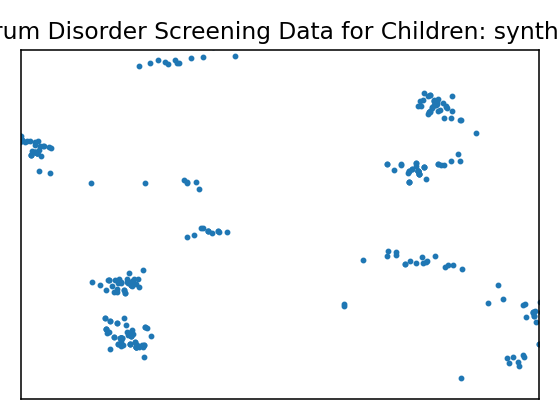
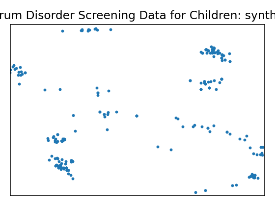
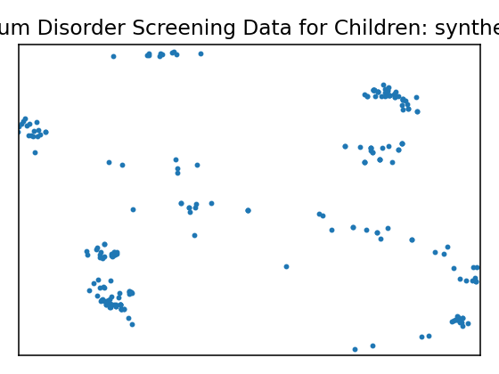
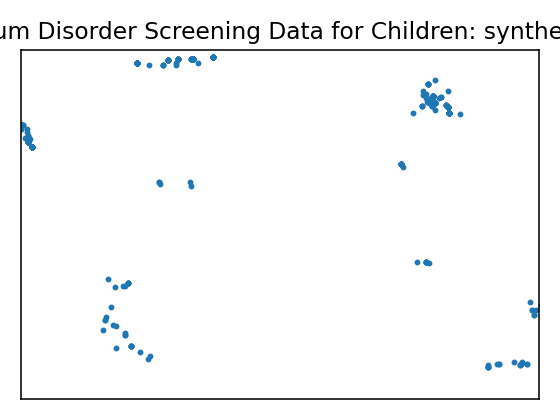
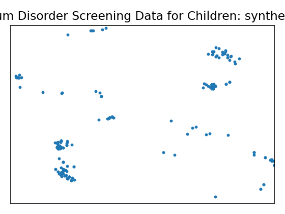
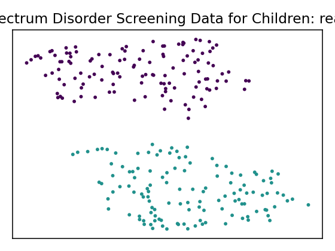
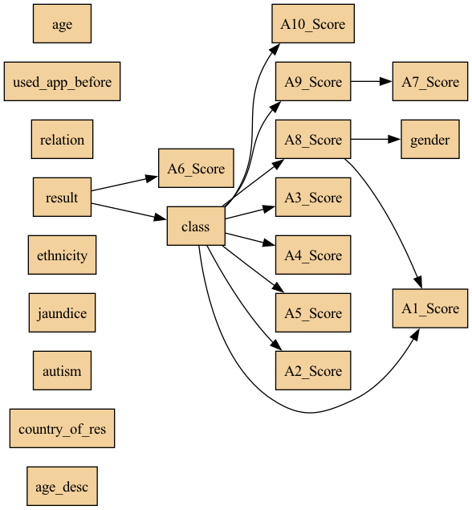

Data Report — Autistic Spectrum Disorder Screening Data for Children
see attached file for variables' description
Documentation: see attached file for variables' description
Source: UCI dataset 419
SemMap JSON-LD: dataset.semmap.json · RDFa HTML
Overview
| Metric | Value |
|---|---|
| Dataset | Autistic Spectrum Disorder Screening Data for Children |
| Source | UCI dataset 419 |
| Rows | 248 |
| Columns | 21 |
| Discrete | 21 |
| Continuous | 0 |
| SemMap | SemMap JSON-LD SemMap HTML |
| Missingness | Not modeled |
Variables and summary
| variable | inferred | dist |
|---|---|---|
| A1_Score | discrete | 1: 170 (68.55%) |
| A2_Score | discrete | 1: 128 (51.61%) |
| A3_Score | discrete | 1: 185 (74.60%) |
| A4_Score | discrete | 1: 142 (57.26%) |
| A5_Score | discrete | 1: 187 (75.40%) |
| A6_Score | discrete | 1: 177 (71.37%) |
| A7_Score | discrete | 1: 155 (62.50%) |
| A8_Score | discrete | 1: 119 (47.98%) |
| A9_Score | discrete | 1: 134 (54.03%) |
| A10_Score | discrete | 1: 182 (73.39%) |
| age | discrete | 4: 78 (31.45%) 5: 36 (14.52%) 6: 33 (13.31%) 7: 24 (9.68%) 11: 23 (9.27%) 8: 20 (8.06%) 9: 17 (6.85%) 10: 17 (6.85%) |
| gender | discrete | m: 174 (70.16%) |
| ethnicity | discrete | White-European: 108 (43.55%) Asian: 46 (18.55%) 'Middle Eastern ': 26 (10.48%) 'South Asian': 21 (8.47%) Others: 14 (5.65%) Black: 14 (5.65%) Latino: 8 (3.23%) Hispanic: 7 (2.82%) Pasifika: 2 (0.81%) Turkish: 2 (0.81%) |
| jaundice | discrete | yes: 61 (24.60%) |
| autism | discrete | yes: 45 (18.15%) |
| country_of_res | discrete | 'United Kingdom': 49 (19.76%) 'United States': 42 (16.94%) India: 42 (16.94%) Australia: 23 (9.27%) 'New Zealand': 13 (5.24%) Jordan: 9 (3.63%) Canada: 7 (2.82%) Bangladesh: 6 (2.42%) 'United Arab Emirates': 5 (2.02%) Philippines: 4 (1.61%) … (+42 more) |
| used_app_before | discrete | yes: 6 (2.42%) |
| result | discrete | 8: 37 (14.92%) 7: 36 (14.52%) 6: 34 (13.71%) 9: 32 (12.90%) 4: 30 (12.10%) 5: 28 (11.29%) 10: 21 (8.47%) 3: 16 (6.45%) 2: 8 (3.23%) 1: 5 (2.02%) … (+1 more) |
| age_desc | discrete | '4-11 years': 248 (100.00%) |
| relation | discrete | Parent: 213 (85.89%) Relative: 17 (6.85%) 'Health care professional': 13 (5.24%) Self: 4 (1.61%) self: 1 (0.40%) |
| class | discrete | YES: 126 (50.81%) |
Fidelity summary
| umap | model | backend | disc jsd mean | disc jsd median | cont ks mean | cont w1 mean | downstream sign match |
|---|---|---|---|---|---|---|---|
 |
metasyn | metasyn | 0.1203 | 0.0999 | 0.6111 | ||
 |
clg_mi2 | pybnesian | 0.111 | 0.0626 | |||
 |
semi_mi5 | pybnesian | 0.111 | 0.0626 | |||
 |
ctgan_fast | synthcity | 0.338 | 0.304 | |||
 |
tvae_quick | synthcity | 0.1713 | 0.1231 |
Privacy summary
| model | backend | n real | n synth | exact overlap rate | near duplicate rate eps | nn distance mean | k min | k pct lt5 | k map | rare qi reproduction rate | identifiability score | delta presence |
|---|---|---|---|---|---|---|---|---|---|---|---|---|
| metasyn | metasyn | 248 | 292 | 0 | 0.6048 | 0.2013 | 1 | 1 | 4 | 0 | 4.25 | |
| clg_mi2 | pybnesian | 248 | 292 | 0.004 | 0.0121 | 0.4247 | 1 | 1 | 6 | 0.0041 | 2.8182 | |
| semi_mi5 | pybnesian | 248 | 292 | 0.004 | 0.0121 | 0.4247 | 1 | 1 | 6 | 0.0041 | 2.8182 | |
| ctgan_fast | synthcity | 248 | 256 | 0 | 0.1008 | 0.5117 | 1 | 1 | 2 | 0 | 30.5 | |
| tvae_quick | synthcity | 248 | 256 | 0 | 0.7581 | 0.1512 | 1 | 1 | 1 | 0 | 17 |
Models
| UMAP | Details | Structure | |||||||||||||||||||||||||||||||||||||||||||||||||||||||||||||||||||||||||||||||||||||||||||||||||||||||||||
|---|---|---|---|---|---|---|---|---|---|---|---|---|---|---|---|---|---|---|---|---|---|---|---|---|---|---|---|---|---|---|---|---|---|---|---|---|---|---|---|---|---|---|---|---|---|---|---|---|---|---|---|---|---|---|---|---|---|---|---|---|---|---|---|---|---|---|---|---|---|---|---|---|---|---|---|---|---|---|---|---|---|---|---|---|---|---|---|---|---|---|---|---|---|---|---|---|---|---|---|---|---|---|---|---|---|---|---|---|---|
 |
Real data | ||||||||||||||||||||||||||||||||||||||||||||||||||||||||||||||||||||||||||||||||||||||||||||||||||||||||||||
Model: metasyn (metasyn)
Per-variable fidelity
Downstream metrics
Privacy metrics
|
| ||||||||||||||||||||||||||||||||||||||||||||||||||||||||||||||||||||||||||||||||||||||||||||||||||||||||||||
Model: clg_mi2 (pybnesian)
Per-variable fidelity
Privacy metrics
|
 | ||||||||||||||||||||||||||||||||||||||||||||||||||||||||||||||||||||||||||||||||||||||||||||||||||||||||||||
Model: semi_mi5 (pybnesian)
Per-variable fidelity
Privacy metrics
|
 | ||||||||||||||||||||||||||||||||||||||||||||||||||||||||||||||||||||||||||||||||||||||||||||||||||||||||||||
Model: ctgan_fast (synthcity)
Per-variable fidelity
Privacy metrics
|
 | ||||||||||||||||||||||||||||||||||||||||||||||||||||||||||||||||||||||||||||||||||||||||||||||||||||||||||||
Model: tvae_quick (synthcity)
Per-variable fidelity
Privacy metrics
|
|
{kind=link}